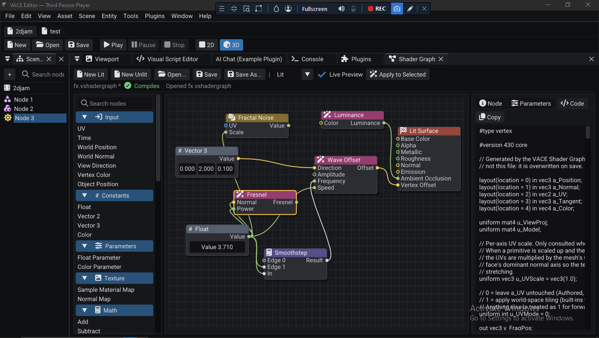
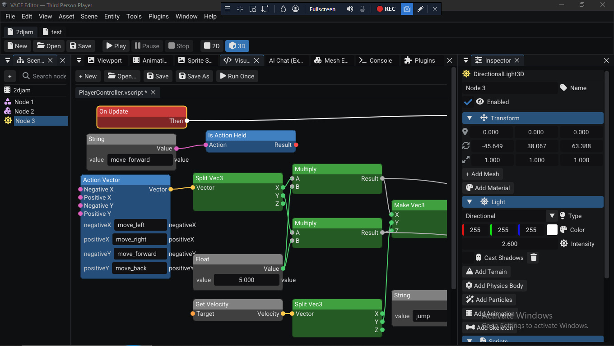

VACE Engine Documentation
VACE is a C++ game engine with a full editor. 2D and 3D, PBR rendering, Jolt and Box2D physics, a shader graph, visual scripting, C++ scripting, and a plugin system. It is free to use. This documentation is bundled with the engine and works entirely offline.
These docs ship inside the VACE release zip. Every link points to a file
in this docs/ folder, so no internet connection is required.
If you opened them from the editor's Help > Documentation
menu, you're in the right place.
What is VACE?
VACE is a game engine built from scratch in C++ by Vanta Games. It pairs a complete editor (scene tree, inspector, viewport, project manager, toolchain settings, console) with a runtime that handles rendering, physics, audio, animation, UI, and scripting. The design goal is simple: a solo developer or small team should be able to open the editor, make a project, and ship a game without fighting the tooling.
The engine is free to use. The source code is not open source, and there are plans to keep VACE free going forward if the project receives enough support from its users. Full licensing details are on the About page.
Why VACE exists
VACE was not started as a commercial product. It grew out of a practical problem: the developer has always worked on low-end hardware, and the engines available at the time either did not run well on it or required a workflow that did not fit.
The engine was built on a 13-year-old Toshiba laptop (4th generation Intel Core i5, 8 GB of RAM, a GPU with no Vulkan support and no DirectX 12). Everything in VACE had to be efficient enough to develop and test on that machine, which shaped many of the engine's design decisions.
Before VACE, the same idea was attempted three times:
- Two JavaScript and WebGL prototypes. These proved the core concepts but ran into the limits of the browser and the language for a full engine.
- A C++ engine on OpenGL 3.3. This was the first native attempt and worked, but its architecture did not leave room to grow.
- VACE today. A re-architecture on OpenGL 4.3 with an expandable design, built from the lessons of the earlier attempts. The renderer, physics, scripting, and editor are all structured so that new features and backends can be added without rewriting the engine.
Vanta Games now uses VACE to develop its own games, and the engine continues to be expanded alongside that work.
Features
VACE is a broad engine. Rendering, physics, scripting, UI, and tooling are all included. The headline features:
Rendering
- OpenGL 4.3 renderer (the current backend; the renderer sits behind an abstraction layer so additional backends can be added as the engine expands to other platforms)
- PBR pipeline with HDR rendering
- Image-based lighting (IBL) from HDR probes
- Screen-space ambient occlusion (SSAO)
- Bloom and tone mapping
- Dynamic lighting
- Anti-aliasing
- Material system with data-driven shaders
- Shader graph for building shaders visually
Physics
- 3D physics via Jolt Physics: rigidbodies, forces, raycasts, collision events, layers
- 2D physics via Box2D for sprites and 2D games
Scripting
- C++ scripting: subclass
VACE::Script, compile to a.dll, attach to nodes. See the Script API reference - Visual scripting: node-based logic in the editor
- Plugin system for extending the engine with native code
Animation and content
- Skeletal and sprite animation (
.glbskeletal clips and.vsprite2D clips) - Animation timeline for authoring and scrubbing animation in-editor
- Spritesheet editor for slicing and defining sprite animations
- Inverse kinematics (IK) for driving skeletal chains from scripts
- Particles with a full particle system and presets
UI and input
- UI system: text, buttons, sliders, images, colors, interaction events, all scriptable
- Input: keyboard, mouse, gamepads, and named input actions with axis and vector composition
Architecture and tooling
- ECS core
- JSON save data via dotted keys
- Full editor: scene tree, inspector, viewport, console, project manager, toolchain settings
- Project Manager for creating, opening, and configuring projects, including compiler and CMake paths
Platforms
VACE currently targets Windows 10 and 11 (64-bit). Both the editor and built games run on Windows. The engine is written with an abstraction layer so that support for other platforms can be added as development continues, but today Windows is the supported target.
Screenshots
A look at the editor in action:




More screenshots are in assets/screenshots/ and on the
Editor walkthrough page.
Quick links
| I want to | Go to |
|---|---|
| Install the engine and build my first project | Installation |
| Learn my way around the editor | Editor walkthrough |
| Create a new project in the Project Manager | Project Manager |
| Write my first C++ script | Script API: Introduction |
| Look up a scripting method | Script API reference |
| Understand the ABI and type system | ABI and types |
| Read the license | License |
| Contact the developer | Contact |
Requirements
- Windows 10 or 11 (64-bit): the current platform target
- A C++ toolchain: MinGW-w64 (recommended; the release is built with it) or MSVC
- CMake 3.20 or newer: used by the Project Manager to configure and build projects
- A GPU with OpenGL 4.3 support: required by the renderer
Scripts compile into a .dll that the engine loads at runtime.
The compiler you select in the Project Manager must produce binaries the
engine runtime can load. If scripts fail to load or you hit link errors,
check the compiler and CMake paths in
Project Manager > Settings.
Getting help
If something here is wrong or missing, the fastest way to reach the developer is the VACE Engine Updates Discord: discord.gg/vjYZsQzuMq. You can also email isaacadudarko1@gmail.com, open an issue on GitHub, or see the Contact page.